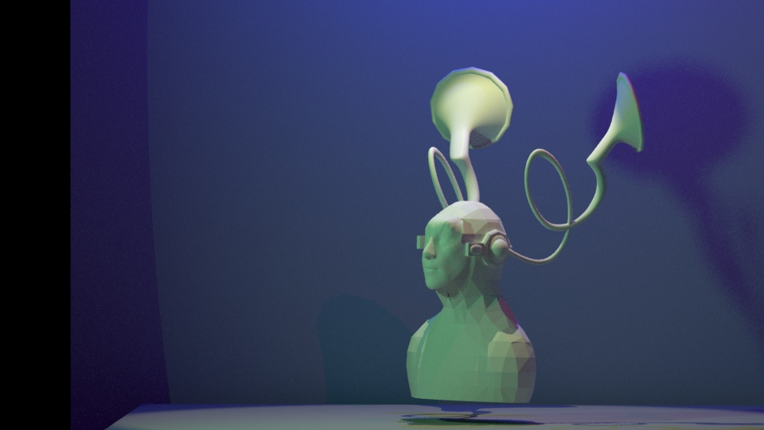
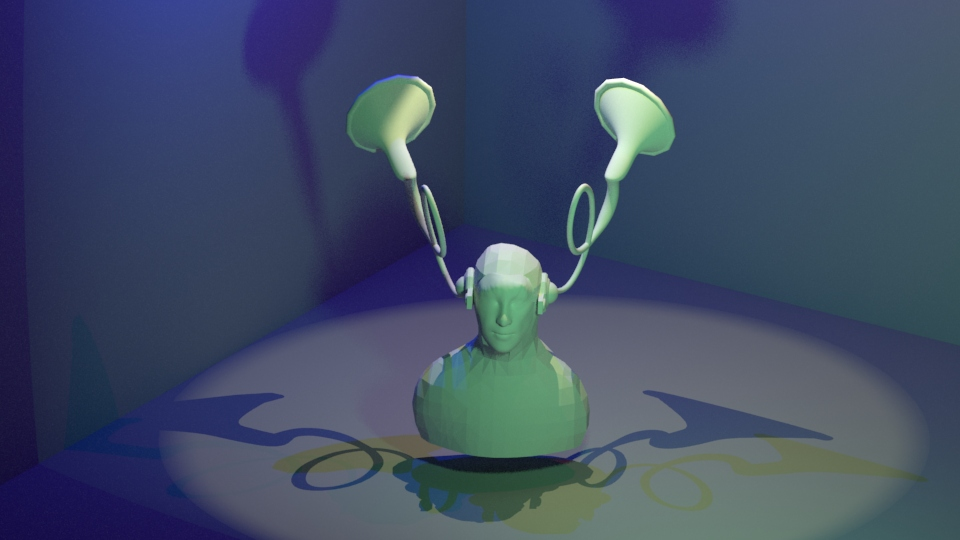

Trumpet Ear
Date: 2020
Dimension:N/A
Mediums:Maya
Description: For the 3D rendering, Trumpet Ear (2020), I decided to create a prosthetic that would amplify a person’s hearing. My inspiration is based on my experiences of being unable to hear what people are saying under their masks during this pandemic. In Maya, I transformed different primitive shapes and created unique shapes using the pen tool to construct the prosthetic. And I used two-point lights, a spotlight, and a volume light to create lighting in the space. There are already existing prosthetics that already aid a person’s hearing. However, I wanted to transform the idea of that preexisting prosthetic into something more extreme and flamboyant. Pushing the biological boundaries of hearing and sound further than before.

